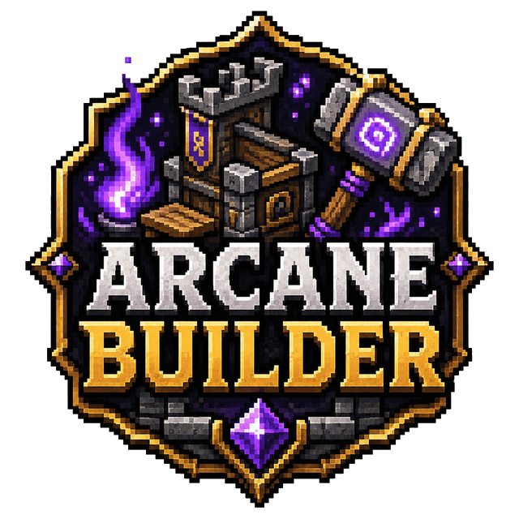

✓
Schematic file support
Use prepared builds instead of reconstructing structures through configuration.

Watch schematics assemble themselves, one block at a time.
Full overview
ArcaneBuilder turns schematic placement into a visible construction sequence. Instead of instantly pasting a finished structure, the plugin can preview it and then assemble the build block by block for a more cinematic result.
The approach works well for server events, unlockable structures, player rewards and world development where the act of construction should be part of the experience.
How it works
A schematic is prepared, positioned and previewed before construction begins. The plugin then schedules block placement at a configurable pace, allowing players to watch the structure grow rather than appear in a single tick.
Administrative tools help manage builds, undo mistakes and respect configured protection rules. Compact builder items can provide a controlled player-facing workflow without exposing unrestricted WorldEdit access.
Administration
Schematic selection, placement speed, preview behaviour, undo and protection handling are designed for event and production use. The plugin works with recognised schematic formats rather than locking structures into a custom editor.
Feature breakdown
Each headline feature is expanded below so visitors can understand the real server use rather than seeing a short tag list.
Use prepared builds instead of reconstructing structures through configuration.
Structures visibly grow over time at a server-defined speed.
Package a build into a controlled, player-friendly placement item.
Commands remain practical while managing multiple schematic files.
Balance cinematic presentation against server performance and build size.
Construction becomes a reveal players can gather around and watch.
Getting started
The platform buttons include downloads, changelogs and the original public resource discussion.
Install ArcaneBuilder and any required schematic support.
Add or prepare schematic files.
Configure placement pacing and protection behaviour.
Preview a test structure before enabling player-facing use.
Community feedback
Live ratings and recent written reviews from the public Spigot resource page.
Review data is loaded through Spiget. Static rating fallbacks remain visible if the service is unavailable.
Related projects
Combat Immersion
Responsive blood trails, pools, bursts and bleeding effects.
Survival Utility
Crystal-themed healing tools for survival gameplay.
Farming Utility
Fast crop harvesting with sensible inventory-based replanting.